| 杂化类型 | 轨道组成 | 几何构型 | 键角 | 键类型 | 实例 |
|---|---|---|---|---|---|
| $sp^3$ | 1s+3p | 四面体 | 109.5° | 4个σ键 | CH4、烷烃 |
| $sp^2$ | 1s+2p | 平面三角 | 120° | 3σ+1π | CH2=CH2、苯 |
| $sp$ | 1s+1p | 直线 | 180° | 2σ+2π | HC≡CH、CO2 |
| 键 | 键长/pm | 键能/(kJ/mol) |
|---|---|---|
| C−C | 154 | 347 |
| C=C | 134 | 611 |
| C≡C | 121 | 837 |
键越短 → 键能越大 → 键越强 → 但π键部分活性高
每个碳：3个sp²杂化轨道（在同一平面内，夹角120°）+ 1个未杂化的pz轨道（垂直于平面）。
键长键角数据：C=C键长 133.7pm，C-H键长 108.6pm，H-C=C键角 121.6°，H-C-H键角 116.7°
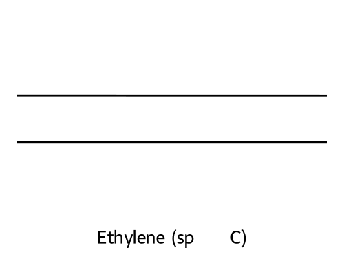
每个碳：2个sp杂化轨道（沿轴线方向，夹角180°）+ 2个未杂化的p轨道（py和pz，互相垂直）。
键长键角数据：C≡C键长 120.7pm，C-H键长 105.9pm，直线形 180°
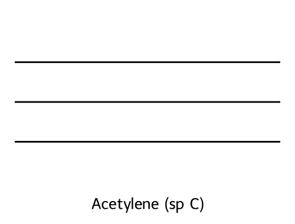
与碳原子类似，氧原子和氮原子也可以有sp³、sp²和sp三种杂化方式。其空间结构与碳原子类似。
| 原子 | 杂化 | σ键数 | 孤电子对数 | 几何形状 | 实例 |
|---|---|---|---|---|---|
| O | sp³ | 2 | 2 | V形 | H₂O, ROH, ROR |
| O | sp² | 1(+π) | 2 | 平面 | C=O(醛酮) |
| N | sp³ | 3 | 1 | 三角锥 | NH₃, RNH₂ |
| N | sp² | 2(+π) | 1 | 平面 | C=N, 酰胺中N |
| N | sp | 1(+2π) | 1 | 直线 | C≡N, RCN |
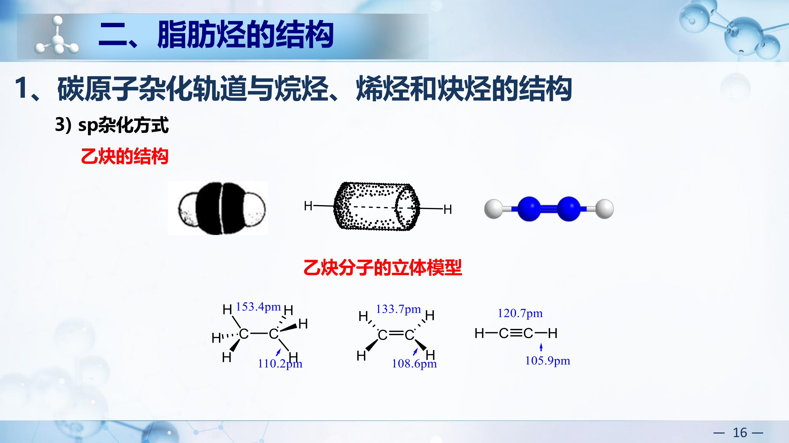
共振论（resonance theory）的基本观点是：价键理论中的电子离域现象可以用共振理论来进行描述。
分子中真实的结构是可能的极限结构式的叠加，是经典结构的共振杂化体。
采用共振论的意义：（1）表示分子的结构；（2）讨论反应机理的一种方法。
共振论是价键理论的延伸和发展，以经典结构式为基础。共振式的稳定性需要考虑八隅规则，使分子中有最少的电荷分离，同时尽可能使电负性强的原子带有较多的负电荷和较少的正电荷。
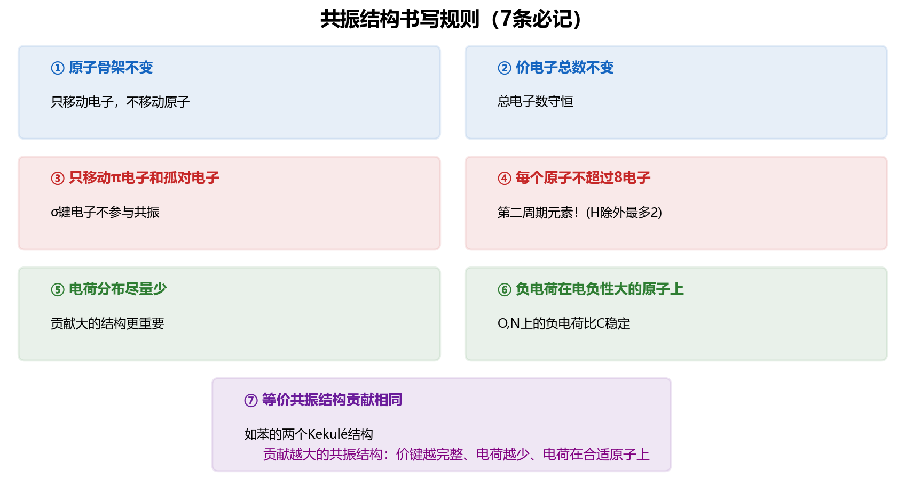
丁-1,3-二烯中4个碳均为sp2杂化，4个p轨道相互平行重叠形成大π键（离域π键）。
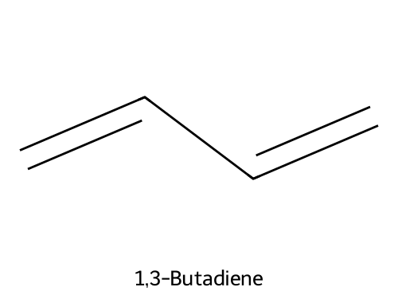
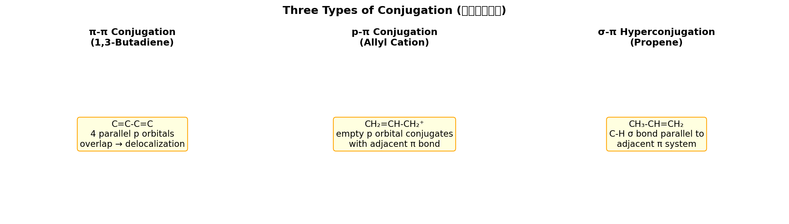
定义：在共轭体系中，电子离域（不再局限于两个原子之间）导致体系能量降低、稳定性增大的效应。共轭效应使分子更稳定、内能更小、键长趋于平均化。
氢化热数据验证（考点）：
| 化合物 | 分子氢化热/(kJ·mol⁻¹) | 每个双键平均氢化热 | 说明 |
|---|---|---|---|
| 1-丁烯(一个C=C) | 125.2 | 125.2 | 基准值 |
| 1-戊烯 | 126.8 | 126.8 | - |
| 1,4-戊二烯(隔离二烯) | 254.4 | 127.2 | ≈2×单烯，无共轭 |
| 1,3-丁二烯(共轭二烯) | 238.9 | 119.5 | 比预期(2×125.2=250.4)低约12 kJ/mol |
| 1,3-戊二烯(共轭) | 225.9 | 113.0 | 共轭稳定化更显著 |
| (E)-1,3,5-己三烯 | 226.4 | 113.2 | 延伸共轭，稳定化能更大 |
以丁-1,3-二烯为例，4个p轨道组合成4个π分子轨道（ψ₁~ψ₄）：
ψ₂是填充有电子的能量最高的分子轨道，称作最高占有轨道，用HOMO表示；ψ₃是未填充电子的能量最低的分子轨道，称作最低未占有轨道，用LUMO表示。
C=碳数，N=氮数，H=氢数，X=卤素数。O和S不参与计算。
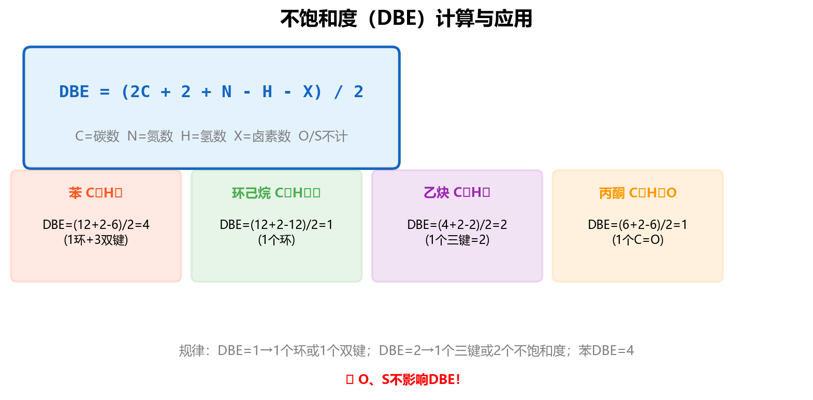
| 碳数 | 中文名 | 英文名 | 碳数 | 中文名 | 英文名 |
|---|---|---|---|---|---|
| 1 | 甲烷 | methane | 7 | 庚烷 | heptane |
| 2 | 乙烷 | ethane | 8 | 辛烷 | octane |
| 3 | 丙烷 | propane | 9 | 壬烷 | nonane |
| 4 | 丁烷 | butane | 10 | 癸烷 | decane |
| 5 | 戊烷 | pentane | 11 | 十一烷 | undecane |
| 6 | 己烷 | hexane | 12 | 十二烷 | dodecane |
| 烷基结构 | 英文名 | 缩写 | 中文名 |
|---|---|---|---|
| CH₃- | methyl | Me | 甲基 |
| CH₃CH₂- | ethyl | Et | 乙基 |
| CH₃CH₂CH₂- | n-propyl | n-Pr | 正丙基 |
| (CH₃)₂CH- | isopropyl | i-Pr | 异丙基 |
| CH₃CH₂CH₂CH₂- | n-butyl | n-Bu | 正丁基 |
| (CH₃)₂CHCH₂- | isobutyl | i-Bu | 异丁基 |
| CH₃CH₂CH(CH₃)- | sec-butyl | s-Bu | 仲丁基 |
| (CH₃)₃C- | tert-butyl | t-Bu | 叔丁基 |
| 类型 | 连接C数 | 符号 | 氢叫法 |
|---|---|---|---|
| 伯碳 | 1个C | 1° | 伯氢 |
| 仲碳 | 2个C | 2° | 仲氢 |
| 叔碳 | 3个C | 3° | 叔氢 |
| 季碳 | 4个C | 4° | 无氢 |
| 中文名 | 英文名 | 结构 |
|---|---|---|
| 乙烯基 | vinyl / ethenyl | CH2=CH− |
| 丙烯基 | propenyl | CH3CH=CH− |
| 烯丙基 | allyl / 2-propenyl | CH2=CHCH2− |
| 异丙烯基 | isopropenyl | CH2=C(CH3)− |
注意区分：丙烯基（双键在1,2位，取代在1位）vs 烯丙基（双键在1,2位，取代在3位）。
当支链本身还有支链（取代基上有取代基）时：
环状烯烃命名时，以双键为母体，重键的编号应尽可能小。
炔烃的系统命名法与烯烃相似：选择含叁键的最长碳链为主链，从靠近叁键的一段开始编号。
烯炔共存时的命名规则：
例：HC≡C-CH₂-CH=CH₂ → 戊-1-烯-4-炔（pent-1-en-4-yne），双键在1位优先于叁键在1位。
只有一个环的环烷烃称为单环烷烃（monocyclic alkane）。对环上没有取代基的环烷烃命名时，中文名称只需在相应的烷烃前加"环"字。
当环上有取代基时，命名规则如下：
实例：甲基环戊烷(methylcyclopentane)、1-异丙基-2-甲基环戊烷、1,1,4-三甲基环己烷
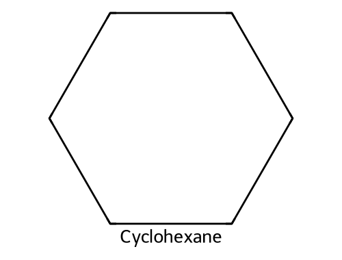
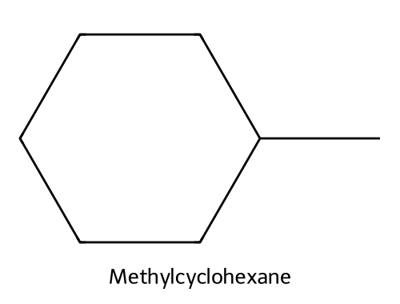
两个（或多个）单环通过共用两个（多个）碳原子构成的多环化合物称为桥环化合物（bridged compound）。
含有两个环的桥环烷烃命名规则：
实例：
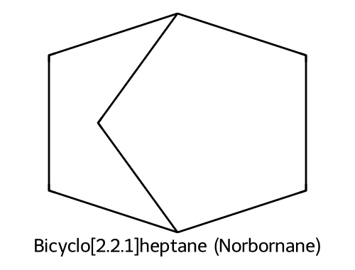
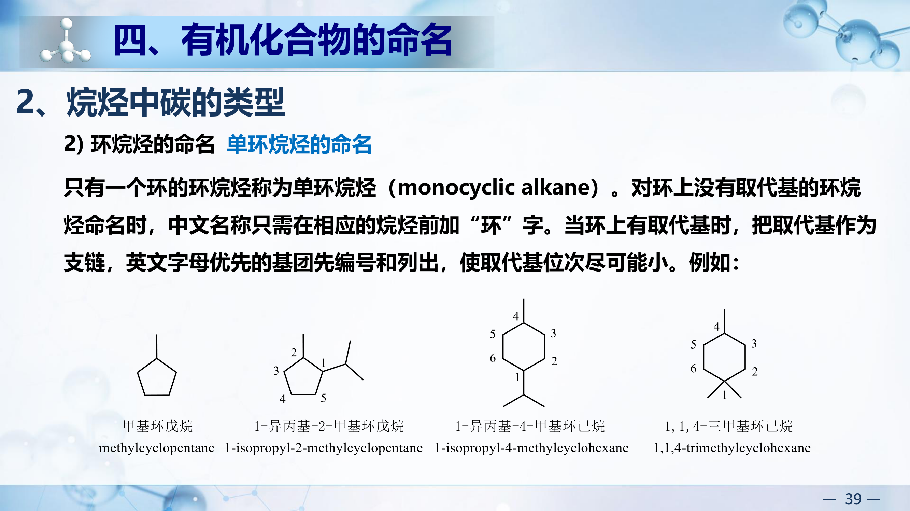
对于任意多环烷烃（仅含碳骨架），可用以下公式快速判断环的数目：
$$\text{环数} = \text{C-C键数} - \text{碳原子数} + 1$$即：从碳骨架中，数出所有C-C键的数目，减去碳原子总数，再加1。
两个单环共用一个碳原子的化合物称为螺环化合物（spiro compound）。共用的碳原子称为螺原子。
实例：
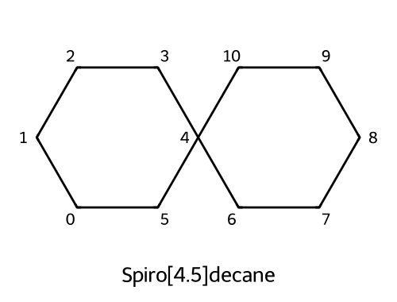
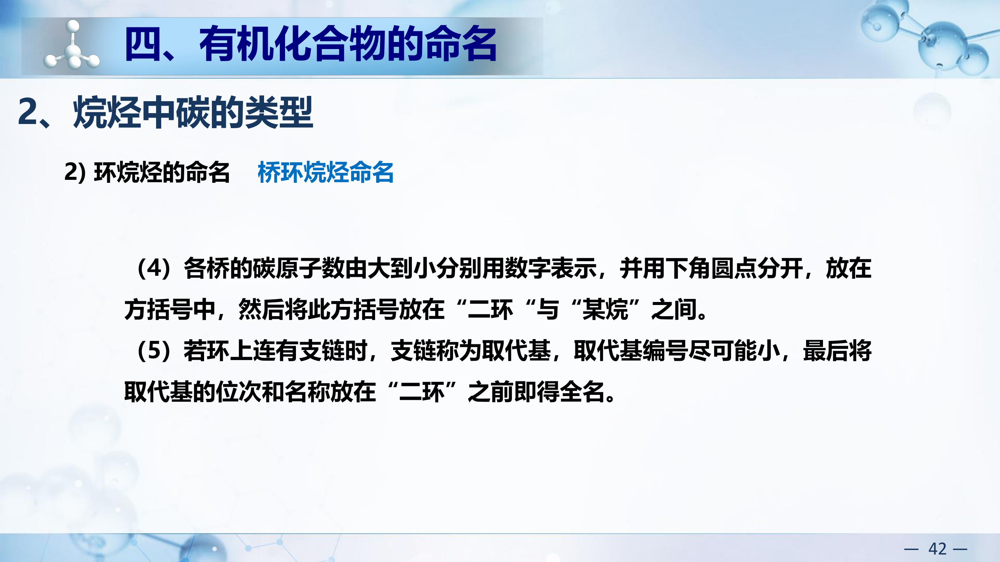
I(53) > Br(35) > Cl(17) > S(16) > O(8) > N(7) > C(6) > H(1)
如果原子序数相同（同位素）时，则按原子量大小次序排列，如 D(²H) > H(¹H)
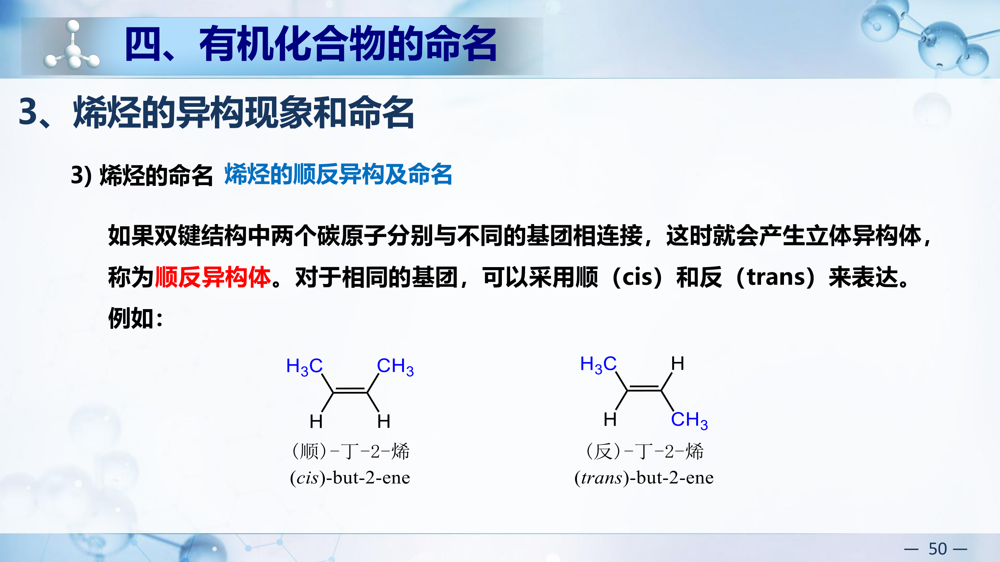
对双键两端各选优先级高的基团：
两个高优先基团在同侧 = Z(zusammen)，异侧 = E(entgegen)
如果双键结构中两个碳原子分别与不同的基团相连接，这时就会产生立体异构体，称为顺反异构体。
对于相同的基团，可以采用顺(cis)和反(trans)来表达：
例：(cis)-丁-2-烯 vs (trans)-丁-2-烯
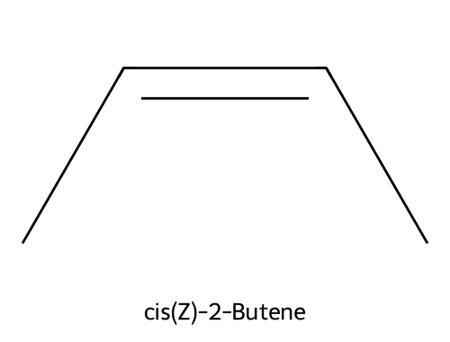
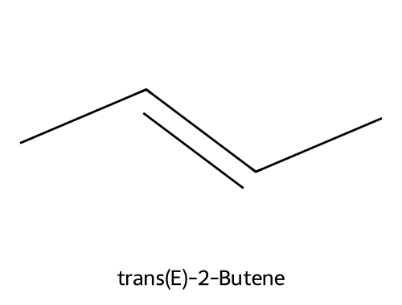
实例一：3-甲基戊-2-烯
C2双键碳上：CH₃(C2上) vs 主链C1(CH₃)。因为 CH₃- > H，所以CH₃为高优先级。
C3双键碳上：CH₃(C3上) vs C4-C5链(CH₂CH₃)。因为 CH₂CH₃ > CH₃，所以乙基为高优先级。
两个高优先级基团（C2端的CH₃和C3端的CH₂CH₃）在同侧→(Z)-3-甲基戊-2-烯；异侧→(E)-3-甲基戊-2-烯
实例二：(Z)-2-氯己-2-烯
C2上：Cl(17) > CH₃(C=6) → Cl优先。C3上：丁基链(C) > H(1) → 丁基优先。Cl和丁基同侧→Z。
实例三：含两个双键的化合物
庚-2,4-二烯 CH₃CH=CH-CH=CHCH₂CH₃ 中每个双键独立判断Z/E → 可得(2E,4E)、(2E,4Z)、(2Z,4E)、(2Z,4Z)四种异构体。
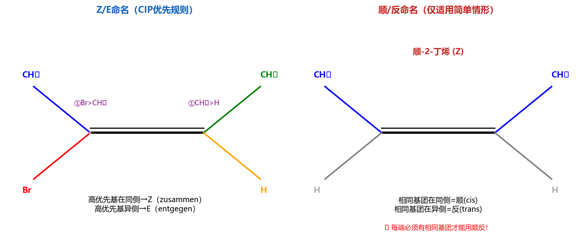
| 官能团 | 结构 | 化合物类 | 命名后缀 |
|---|---|---|---|
| 碳碳双键 | C=C | 烯烃 | -烯(-ene) |
| 碳碳三键 | C≡C | 炔烃 | -炔(-yne) |
| 羟基 | −OH | 醇 | -醇(-ol) |
| 醚键 | −O− | 醚 | -醚(ether) |
| 醛基 | −CHO | 醛 | -醛(-al) |
| 酮基 | −CO− | 酮 | -酮(-one) |
| 羧基 | −COOH | 羧酸 | -酸(-oic acid) |
| 酯基 | −COOR | 酯 | -酸某酯(-oate) |
| 氨基 | −NH2 | 胺 | -胺(-amine) |
| 酰胺基 | −CONH2 | 酰胺 | -酰胺(-amide) |
| 卤素 | −X | 卤代烃 | 卤代-(halo-) |
(a) CH2=CHCHO（丙烯醛）：
| 原子 | σ键数 | 孤电子对(杂化) | 杂化 | 理由 |
|---|---|---|---|---|
| C1(=CH2) | 3 | 0 | sp2 | 形成C=C双键 |
| C2(=CH) | 3 | 0 | sp2 | 形成C=C双键 |
| C3(=O) | 3 | 0 | sp2 | 形成C=O双键 |
| O | 1 | 2 | sp2 | 一对孤电子参与p-π共轭（与C=O共面） |
(b) CH3CN（乙腈）：
| 原子 | σ键数 | 孤电子对(杂化) | 杂化 |
|---|---|---|---|
| C(CH3) | 4 | 0 | sp3 |
| C(≡N) | 2 | 0 | sp |
| N | 1 | 1 | sp |
C≡N为直线形，N的一对孤电子占据sp杂化轨道（沿轴方向伸出）。
(c) CH2=C=CH2（丙二烯 allene）：
| 原子 | 杂化 | 说明 |
|---|---|---|
| C1, C3 | sp2 | 各形成一个C=C |
| C2(中心) | sp | 形成两个C=C双键，两个π键互相垂直 |
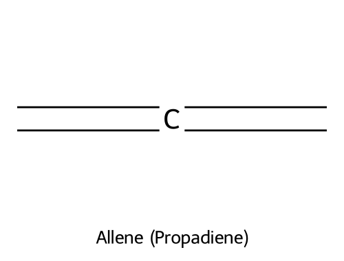
(d) HCONH2（甲酰胺）：
| 原子 | 杂化 | 说明 |
|---|---|---|
| C | sp2 | 形成C=O双键 |
| O | sp2 | C=O中的O |
| N | sp2 | N的孤电子对与C=O形成p-π共轭（酰胺共振） |
(a) C8H8：DBE = (2×8+2−8)/2 = 5
5 = 苯环(4) + 1个双键或环。可能结构：苯乙烯 C6H5CH=CH2（最合理）、环辛四烯（全顺式4个双键+1环=5，也符合）。
(b) C4H6O：DBE = (2×4+2−6)/2 = 2
2个不饱和度。可能：丁烯醛 CH3CH=CHCHO（1 C=C + 1 C=O）、甲基乙烯基酮 CH3COCH=CH2、环丙基甲醛(1环+1 C=O)。
(c) C6H5NO2：DBE = (2×6+2+1−5)/2 = 5
5 = 苯环(4) + 1。→ 硝基苯 C6H5NO2（硝基中N=O贡献1个不饱和度）。
(d) C3H5ClO：DBE = (2×3+2−5−1)/2 = 1
1个不饱和度。可能：环氧氯丙烷（环氧环=1）、3-氯丙醛 ClCH2CH2CHO（C=O=1）、氯丙酮 CH3COCH2Cl。
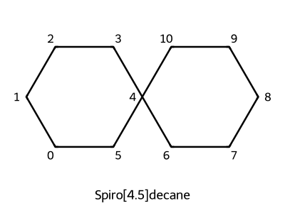
螺环化合物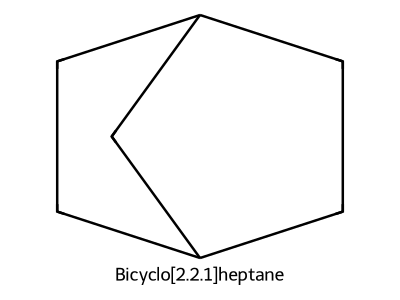
桥环化合物(a) 展开：C-C(C)-C-C(C)(C)-C-C(C2H5)-C
最长链8C：2,4,4,6-四甲基-6-乙基辛烷 → 不对。重新数：主链为C1-C2-C3-C4-C5-C6-C7-C8。
答：2,4,4-三甲基-6-乙基辛烷
(b) 主链7C(庚)，3位甲基，4位异丙基，双键在3位。判断E/Z：C3双键碳上 → 高优先级侧为主链(C4-C7) vs CH3；C4双键碳上 → (CH3)2CH vs 主链(C5-C7)。两个高优先级基团在异侧 → (E)-4-异丙基-3-甲基-3-庚烯
(c) 螺环：两个环共享一个碳原子。环大小=4+5碳（不含共享碳）=9个碳+共享碳=10碳。
答：螺[4.5]癸烷（spiro[4.5]decane）
编号：从小环邻接螺原子开始，先经小环再经大环。
(d) 桥环：两个环共享两个碳（桥头碳）。总碳数=7。三条桥分别为2C、2C、1C。
答：双环[2.2.1]庚烷（bicyclo[2.2.1]heptane，即降冰片烷norbornane）
编号：从一个桥头碳开始，先沿最长桥→另一桥头→次长桥返回→最短桥。
(e) 含OH优先。最长含C=C和OH的链为6C。OH在5位，C=C在2位。
答：3-甲基-2-己烯-5-醇（或按新规 3-methylhex-2-en-5-ol）
(f) 新戊基型。最长链6C。
答：2,2,4-三甲基己烷
(a) (2E,4Z)-2,4-己二烯：6碳链，C2=C3和C4=C5双键。
C2=C3：两个高优先级基团(C1H3在C2, C4链在C3)分居两侧→E。
C4=C5：高优先级基团(C3链在C4, C6H3在C5)分居同侧→Z。
结构：CH3\C=C/H 且 H\C=C/CH3（中间连接）→ CH3-CH=CH-CH=CH-CH3，2位E构型3位Z构型。
(b) 螺[3.4]辛-1-烯：螺环，小环4碳环，大环5碳环，共享螺原子=总8碳。从小环邻螺碳编号，C1=C2有双键。
(c) 7-甲基双环[2.2.1]庚-2-烯：降冰片烯骨架，C7(单碳桥上)连甲基，C2=C3双键。
(d) (R)-3-氯-1-丁烯：CH2=CH-CHCl-CH3。C3为手性碳(连H, Cl, CH=CH2, CH3)。
CIP优先级：Cl > CH=CH2 > CH3 > H。H在后方时，Cl→乙烯基→甲基为顺时针→R构型。
(a) 烯丙基碳正离子（p-π共轭：空p轨道与π键共轭）：
I: CH2=CH−CH2+ ←→ II: +CH2−CH=CH2
两个共振式完全等价，贡献相同。正电荷平均分布在C1和C3上（各+0.5），C2不带电荷但参与π体系。键长：C1-C2 = C2-C3 ≈ 1.38 Å（介于单双键之间）。
(b) 乙烯基胺 CH2=CH−NH2（p-π共轭：N孤电子对与C=C共轭）：
I: CH2=CH−NH2 ←→ II: −CH2−CH=NH2+
贡献：I > II。理由：II有电荷分离（不利），且N上正电荷不利（N电负性大）。
但II说明：①N的碱性降低（孤电子对部分离域）②C1有部分负电荷（亲电加成的位点）③C-N键有部分双键性质（旋转受阻）。
(c) 1,3-丁二烯（π-π共轭）：
I: CH2=CH−CH=CH2（主要）
II: +CH2−CH=CH−CH2−（次要）
III: −CH2−CH=CH−CH2+（次要，与II等价）
贡献：I ≫ II = III。I无电荷分离贡献最大。II和III说明C2-C3有部分双键性质（旋转势垒约25 kJ/mol），C1和C4有微弱的负/正电荷倾向。
(a) 第一层原子：全是C，需看第二层。
| 基团 | 中心C连接 | 第二层 |
|---|---|---|
| −CHO | H, =O → 展开(H, O, O) | (O,O,H) |
| −CH=CH2 | H, =C → 展开(H, C, C) | (C,C,H) |
| −CH2OH | H, H, O | (O,H,H) |
| −CH3 | H, H, H | (H,H,H) |
比较第二层最高原子：O > C > O(但配对不同) > H
答：−CHO > −CH2OH > −CH=CH2 > −CH3
(b) 虚原子展开：
| 基团 | 展开后第一个C连接 |
|---|---|
| −C≡CH | (C,C,C) — 三键展开3个虚C |
| −CH=CH2 | (C,C,H) — 双键展开2个虚C |
| −C(CH3)3 | (C,C,C) — 3个真实C |
| −CH2CH3 | (C,H,H) |
−C≡CH vs −C(CH3)3：第二层都是(C,C,C)，继续到第三层。−C≡CH的虚原子(phantom atom)没有进一步取代基（无后续连接，等效原子序数为0）；而−C(CH3)3的每个真实C连3个H（原子序数=1）。第三层比较：H(1) > 虚原子(0)，因此−C(CH3)3在第三层胜出。
规则要点：虚原子(phantom atom)只复制了原子序数用于第二层比较，但在更深层没有任何取代基（等效为0），而真实原子有真实的后续取代基。
答：−C(CH3)3 > −C≡CH > −CH=CH2 > −CH2CH3
(c) 第一层原子：Cl(直接连) vs C(其余三个)。
−Cl：第一层直接就是Cl(17) → 最高优先级。
其余比较第二层：−CCl3(Cl,Cl,Cl) > −CHCl2(Cl,Cl,H) > −CH2Cl(Cl,H,H)。
答：−Cl > −CCl3 > −CHCl2 > −CH2Cl
(a) 主官能团=OH(醇)。含OH和C=C最长链=6C（己）。OH在C1→编号从OH端开始。
C1: CH2OH, C2: CH(CH3), C3: CH2, C4: C(Cl)=, C5: CH=, C6: CH3
名称：4-氯-2-甲基-4-己烯-1-醇
E/Z判断：C4连Cl和C3链，C5连C6(CH3)和H。C4高优先=Cl，C5高优先=CH3→同侧=Z。
答：(Z)-4-氯-2-甲基-4-己烯-1-醇
(b) 双环[2.2.2]辛烷有8C，加2个CH3=C10H16（验证：C8H14+2CH2=C10H18? 不对。双环[2.2.2]辛烷=C8H14，加2个甲基→C10H18。题目说C10H16，DBE=3=双环(2)+1双键。所以含一个双键。
答：1,4-二甲基双环[2.2.2]辛-2-烯
(c) 戊酸=5C链+COOH。C2连Cl(R构型)，C3连CH3(S构型)。
答：(2R,3S)-2-氯-3-甲基戊酸（即题目本身就是名称，验证：主链5C含COOH，C2-Cl，C3-CH3，两个手性中心分别为R和S→这是赤式/苏式异构体之一）。